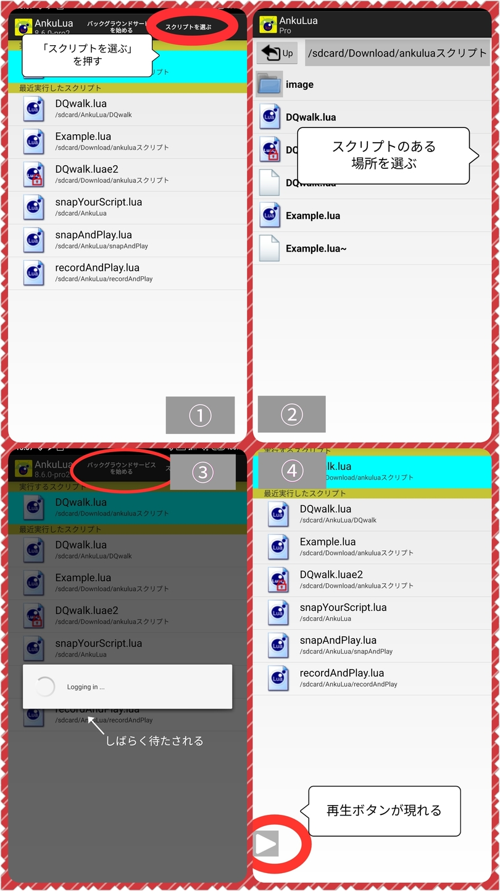
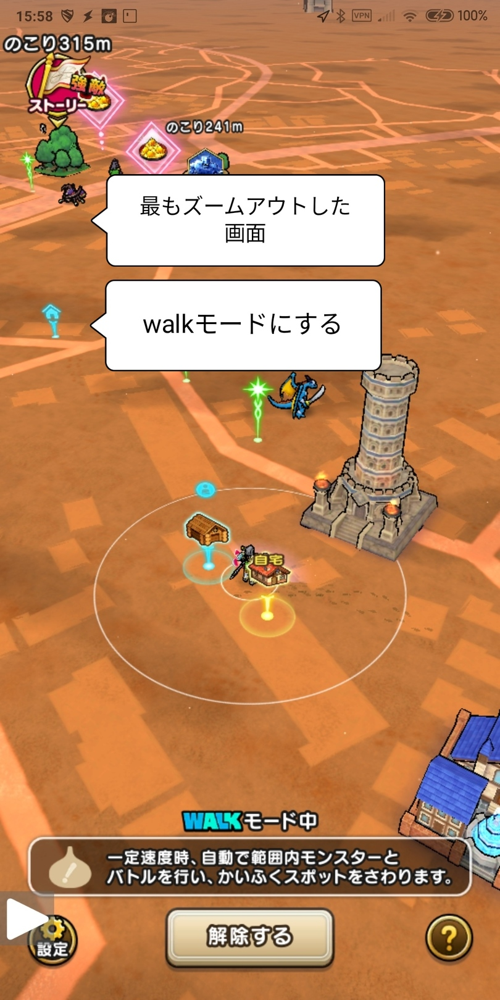

ドラクエウォークのスクリプト
何ができるのか
- 主に自宅や職場にいるとき、またはこころ集めのときに使っています。
- 少し離れた敵をタップすると近づいてくるのをご存知でしょうか？このスクリプトでは、自動で少し離れた敵をタップして戦闘することができます。
- 自分が自宅や職場に居て移動していないとき、walkモードではどんなに敵が近くにいても戦ってくれません。このスクリプトでは、そういう状況でも戦い続けることができます。
- 同様に、移動していないときwalkモードではHPの回復を行ってくれません。このスクリプトでは、HPが少ないとき「ピンチ」「瀕死」状態を検出して「じゅんび」→「まんたん」→「じゅもんで」で自動で体力を回復してくれます。
- 「運転中ではありませんか？」のダイアログを検出すると自動で閉じます。電車やタクシー、バスなどの移動中でも問題なくスクリプトが動きつづけます。
使った様子 1
少し離れたところにいる敵が「ピクッ」と反応している様子が見れると思います。スクリプトが自動でタップしているので、敵が近寄ってくるのです。
使った様子 2
戦闘が終わったあと、近くにいる敵を自動でタップするので、また戦闘が始まります。寄ってきた敵がいなくなるまで繰り返します。
使った様子 3
戦闘が終わって「ピンチ状態」になっているときに、スクリプトがそれを検出してHPを「じゅんび」→「まんたん」→「じゅもんで」回復している様子です。まんたんにできない場合はスクリプトは終了します。
利用方法
- まず最初にユーザ登録のために機種IDを送って頂きます。機種IDをコピペするankuluaのスクリプトをお送りします。そのスクリプトを実行するだけでクリップボードに機種IDがコピーされるので、メールなどにペーストして送って下さい。こちらでユーザ登録をしたドラクエウォークのスクリプトをお送りします。
- ankuluaを起動し、スクリプトを選択したあと、バックグラウンドでサービスを開始します。すると再生ボタンが画面に現れます。
- 再生ボタンを押すと、ankuluaで選んでおいたスクリプトが実行されます。


実行する前にドラクエウォークは「walkモード」にして「画面は一番ズームアウトした状態」にして下さい。その状態でないと正しく画像が認識できません。

walkモードでは「自動でまんたん」はOFFにして下さい。「ピンチ」や「瀕死」をスクリプトが判定するので、競合してしまい誤動作してしまいます。
「ネットワークがタイムアウトしました」のダイアログは検出しません。移動中にスクリプトを実行するのであれば、Wifiはオフにした方がよいでしょう。Wifiに接続した状態が保持できるのであればそのままスクリプトをお使い下さい。
ankuluaの再生ボタンは、下の画像のように「walkモード中」の下の吹き出し枠の左側くらいの位置に置いて下さい。他の場所だとスクリプトのタップ動作で押されてしまうことがあります。
お試しスクリプト
Androidスマホは様々な解像度の機種があるため、まず動作確認したい方がほとんどだと思います。そこでご連絡頂ければ1週間ほど無料で使用できるお試しスクリプトをお渡しします。
お試しスクリプトが動作しなかった場合、動作するように対応しますがご協力頂くことがあるかもしれませんのでご理解お願い致します。